Customize Forest Plots and Tables
Source:vignettes/ggforestplotR-plot-customization.Rmd
ggforestplotR-plot-customization.RmdThis article covers plot appearance, table formatting, and figure layout. For model extraction, see Working with Fitted Models.
Group rows and control strip placement
facet creates section panels, and
facet_strip_position controls which side gets the strip
labels.
coefs <- data.frame(
term = c("Age", "BMI", "Smoking", "Stage II", "Stage III"),
estimate = c(0.12, -0.10, 0.18, 0.30, 0.46),
conf.low = c(0.03, -0.18, 0.04, 0.10, 0.18),
conf.high = c(0.21, 0.02, 0.32, 0.50, 0.74),
sample_size = c(120, 115, 98, 87, 83),
p_value = c(0.04, 0.15, 0.29, 0.001, 0.075),
section = c("Clinical", "Clinical", "Clinical", "Tumor", "Tumor")
)
ggforestplot(
coefs,
facet = "section",
facet_strip_position = "right",
striped_rows = TRUE
)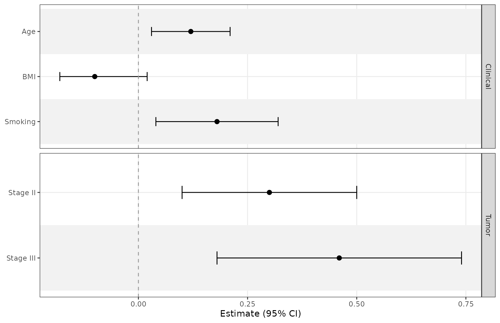
Labels, ordering, and styling
Use term_labels to rename displayed terms and
sort_terms to order ordinary estimate rows. Subgroup and
structured rows preserve source order and require
sort_terms = "none".
ggforestplot(
coefs,
term_labels = c("Smoking" = "Smoking status"),
sort_terms = "descending",
striped_rows = TRUE,
stripe_fill = "grey94",
stripe_alpha = 0.6,
ref_colour = "grey40"
) +
labs(x = "Coefficient (95% CI)", y = NULL) +
theme(axis.text = element_text(size = 10))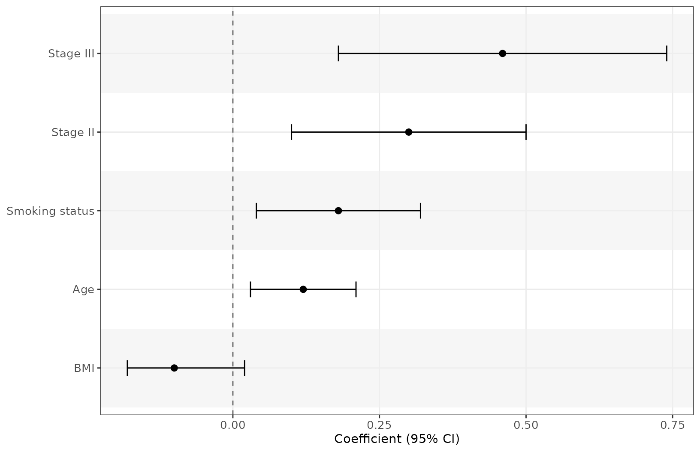
For hierarchical subgroups and reference rows, see Preparing Forest Data.
Coordinate plot and table typography
Add forest_theme() before a table helper to set plot
typography and shared table text defaults. Use ordinary
theme() settings after forest_theme() for
further plot adjustments, or pass named theme settings to
forest_theme().
The table helpers also accept these controls directly, without a forest theme:
| Target | Size | Face | Family | Colour |
|---|---|---|---|---|
| Body rows | text_size |
text_fontface |
text_family |
text_colour |
| Column headers | header_text_size |
header_fontface |
header_family |
header_colour |
| Reference rows | reference_text_size |
reference_fontface |
reference_family |
reference_colour |
| Section/subgroup headers | row_header_text_size |
row_header_fontface |
row_header_family |
row_header_colour |
Body, reference, and row-header sizes use
millimeters. Column-header sizes and
forest_theme(base_size = ...) use points.
Font faces accept "plain", "bold",
"italic", and "bold.italic".
Explicit non-NULL table arguments override theme settings.
Unspecified reference and row-header properties inherit the resolved
body style; column headers inherit body family and colour but retain
their own size and face. Styling a reference row affects all its cells,
including the term label and reference text. Row-header styling applies
to explicit "header" rows and generated subgroup headers.
Summary rows use the body style.
styled_data <- data.frame(
term = c("Treatment", "Control", "Active", "Age"),
estimate = c(NA, NA, 1.35, 1.02),
conf.low = c(NA, NA, 1.10, 1.01),
conf.high = c(NA, NA, 1.66, 1.03),
row_type = c("header", "reference", "estimate", "estimate")
)
styled_plot <- ggforestplot(
styled_data, row_type = "row_type", exponentiate = TRUE,
striped_rows = TRUE
) +
forest_theme(
base_family = "serif",
text_size = 3.5,
row_header_fontface = "bold",
reference_fontface = "italic",
reference_colour = "grey40"
)
styled_plot +
add_split_table(
left_columns = "term",
right_columns = c("estimate", "ci"),
header_colour = "navy",
header_text_size = 12,
reference_text = "Ref."
)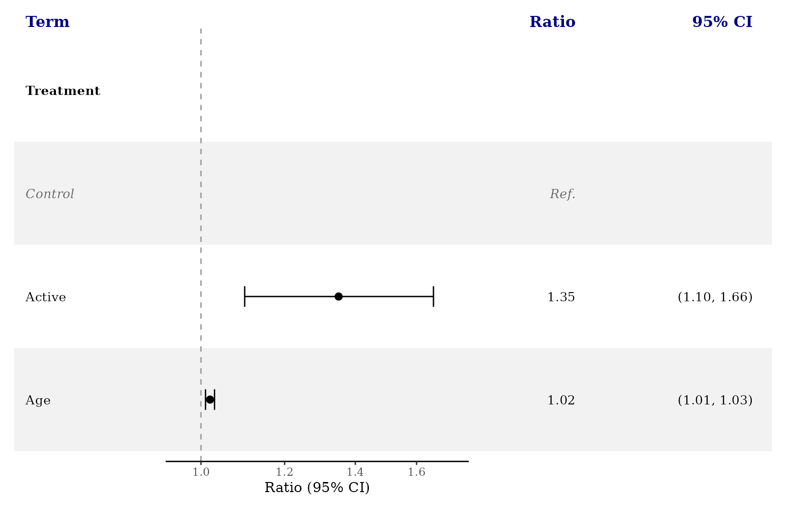
The same controls work with a side table, including direct function syntax:
add_forest_table(
styled_plot,
columns = c("term", "estimate"),
text_family = "sans",
text_fontface = "plain",
header_fontface = "bold.italic",
reference_fontface = "bold",
row_header_colour = "navy"
)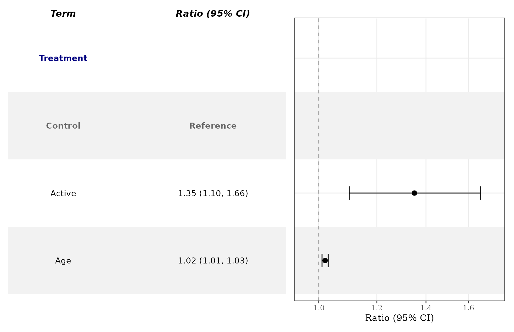
Text widths are measured using the chosen size, face, and family.
Font availability depends on your graphics device; use an installed font
or a generic family such as "sans", "serif",
or "mono". Larger text may also need a taller export to
avoid crowding rows. Apply forest_theme() before tables and
favors; it is a forest-plot add-on, not a theme_set()
replacement.
Distinct variable separation
Use separate_groups and separate_lines when
you want a more distinct visual separation between variables. This is
especially useful for categorical variables with many levels.
separate_groups automatically appends the variable name to
the level.
Use separate_groups and separate_lines when
you want a more distinct visual separation between variables. This is
especially useful for categorical variables with many levels.
separate_groups automatically appends the variable name to
the level.
block_coefs <- data.frame(
term = c("race_black", "race_white", "race_other", "age", "bmi"),
label = c("Black", "White", "Other", "Age", "BMI"),
estimate = c(0.24, 0.08, -0.04, 0.12, -0.09),
conf.low = c(0.10, -0.04, -0.18, 0.03, -0.17),
conf.high = c(0.38, 0.20, 0.10, 0.21, -0.01),
variable_block = c("Race", "Race", "Race", "Age", "BMI")
)
ggforestplot(
block_coefs,
label = "label",
separate_groups = "variable_block",
separate_lines = TRUE,
striped_rows = TRUE
)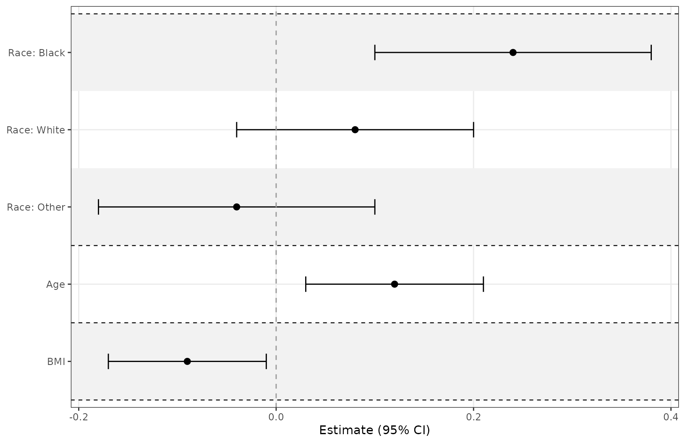
Add a side table
add_forest_table() allows you to attach model
information to the coefficient plot. The table can be added to either
the left or right side and allows for some customization. Apply plot
scales, labels, and themes before adding a table. Table helpers return a
patchwork composition. Add add_favors() after the table
when you want a directional footer.
You can choose which columns from your dataframe to include in the
table using the columns argument, and can change the labels
using column_labels. If some of the term labels need to be
changed, use term_labels to assign them new values. Some of
the column labels are automatically assigned if no value is
provided.
Map source p-values explicitly with p.value = "p_value".
Table selectors "p" and "p.value" refer to the
canonical statistic; the mapped source name is also accepted. Mapping
selects the data; table selectors control what is displayed.
ggforestplot(
coefs,
facet = "section",
facet_strip_position = "right",
p.value = "p_value",
striped_rows = TRUE,
term_labels = c("Smoking" = "Smoking status")
) +
add_forest_table(
columns = c("term", "sample_size", "estimate", "p_value"),
column_labels = c("term" = "Variable", "sample_size" = "N",
"estimate" = "Beta (95% CI)", "p_value" = "P-value")
)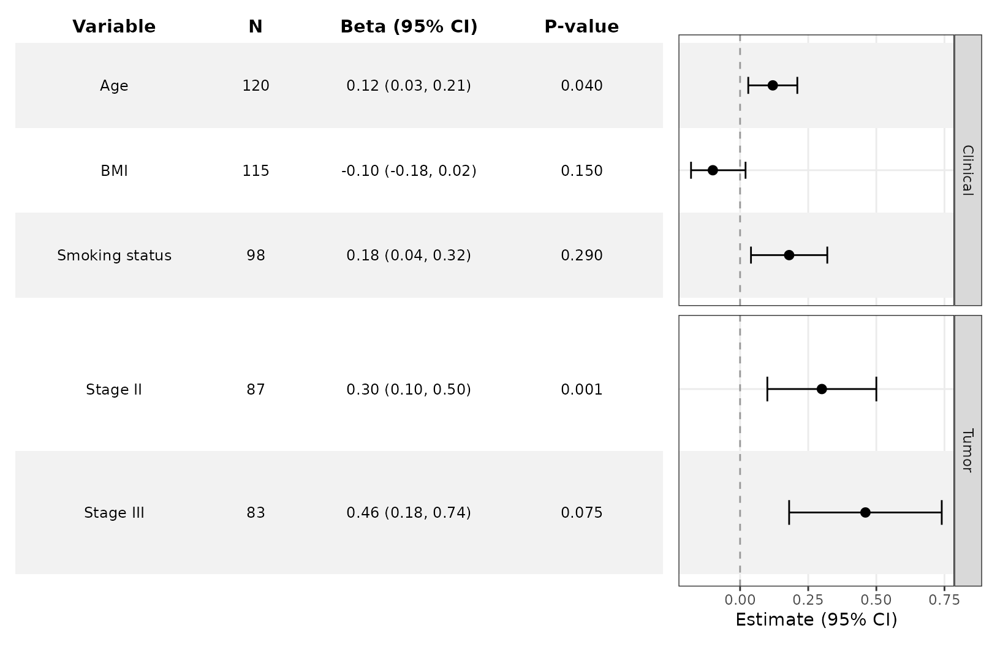
Customize the table
add_forest_table also lets you change some minor styling
elements of the forest table.
ggforestplot(
coefs,
n = "sample_size",
p.value = "p_value",
striped_rows = TRUE
) +
add_forest_table(
position = "left",
grid_lines = TRUE,
grid_line_linetype = 2,
grid_line_colour = "red"
)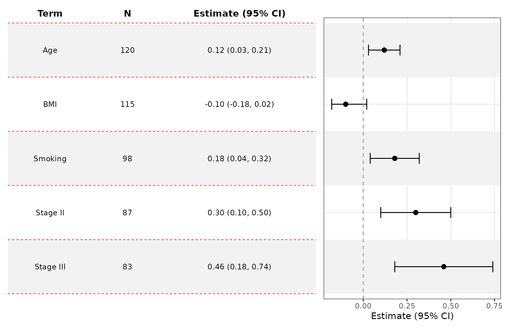
Split tables
add_split_table() can be used to create more traditional
looking forest plots. You can choose which summary information goes to
which side. Like add_forest_table(), it should be added
after any plot-level styling.
Use the estimate_fmt argument to change how your
estimates are displayed. You can also control digits via
estimate_digits, interval_digits, and
p_digits.
ggforestplot(
coefs,
n = "sample_size",
p.value = "p_value",
striped_rows = TRUE
) +
scale_x_continuous(limits = c(-.8,.8)) +
add_split_table(
left_columns = c("term","n"),
right_columns = c("estimate","p"),
column_labels = c("estimate" = "Beta [95% CI]"),
estimate_fmt = "{estimate} [{conf.low}, {conf.high}]",
estimate_digits = 2,
interval_digits = 3,
p_digits = 2
)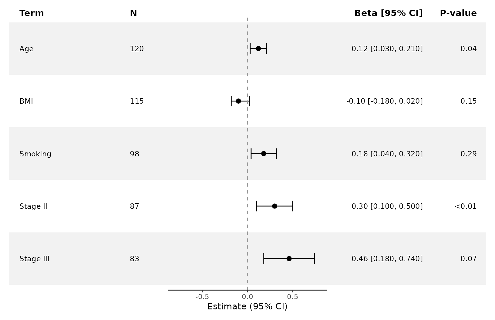
Formatting table values with functions
formatters accepts a named list of vectorized functions.
Each function receives a source vector and returns one value per input.
You can format built in statistics and any preserved source column. A
ci formatter applies to both confidence bounds unless
conf.low or conf.high overrides it.
format_data <- data.frame(
term = c("Age", "BMI"),
estimate = c(0.31, -0.24),
conf.low = c(0.12, -0.40),
conf.high = c(0.56, -0.08),
p.value = c(0.0004, 0.023),
prevalence = c(0.1543, 0.2871)
)
ggforestplot(format_data, p.value = "p.value", staple_width = 0.1) +
add_split_table(
left_columns = c("term", "prevalence"),
right_columns = c("estimate", "p"),
formatters = list(
estimate = function(x) sprintf("%.1f", x),
ci = function(x) sprintf("%.3f", x),
p = function(x) ifelse(x < 0.001, "<0.001", sprintf("%.3f", x)),
prevalence = function(x) sprintf("%.1f%%", 100 * x)
),
estimate_fmt = "{estimate} [{conf.low}, {conf.high}]"
)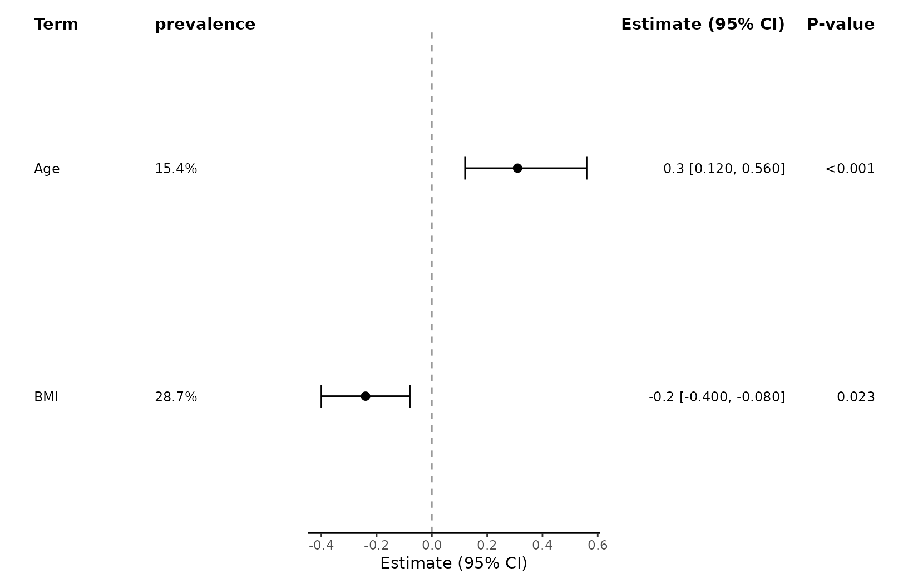
Formatter functions act on scalar source values before
estimate_fmt and ci_fmt compose text, and
before grouped cells are combined. Functions from other packages work
when they follow the same vector input and output contract.
Compare multiple estimates
The group argument is handy when comparing estimates
from several models.
comparison_coefs <- data.frame(
term = rep(c("Age", "BMI", "Smoking", "Stage II", "Stage III"), 2),
estimate = c(0.12, -0.10, 0.18, 0.30, 0.46, 0.08, -0.05, 0.24, 0.40, 0.58),
conf.low = c(0.03, -0.18, 0.04, 0.10, 0.18, 0.00, -0.13, 0.10, 0.20, 0.30),
conf.high = c(0.21, -0.02, 0.32, 0.50, 0.74, 0.16, 0.03, 0.38, 0.60, 0.86),
model = rep(c("A", "B"), each = 5)
)
ggforestplot(
comparison_coefs,
group = "model",
striped_rows = TRUE,
dodge_width = 0.5
) +
theme(legend.position = "top") +
scale_color_manual(values = c("#1F968BFF", "#453781FF")) +
labs(color = "Model") +
add_forest_table(
column_labels = c("term" = "Term",
"model" = "Model",
"estimate" = "Estimate (95% CI)")
)
#> Scale for colour is already present.
#> Adding another scale for colour, which will replace the existing scale.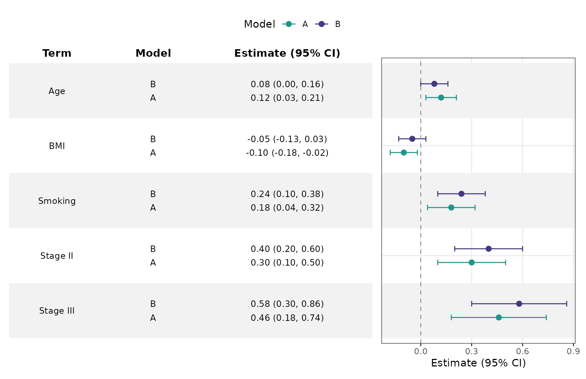
For comparing fitted models, see Working with Fitted Models.
Marker sizes and confidence intervals
Map point_size to a numeric source column.
ggforestplot(coefs, point_size = "sample_size", point_shape = 15) +
scale_size_area(max_size = 5) +
labs(size = "Sample size")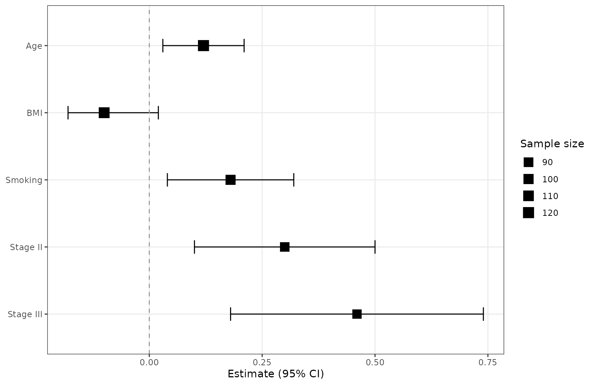
Use ci_limits to truncate displayed intervals with
outward arrows. The underlying estimates and table values retain their
original values.
ggforestplot(coefs, ci_limits = c(-0.2, 0.6), ci_arrows = TRUE,
striped_rows = TRUE) +
add_forest_table(columns = c("term", "estimate"))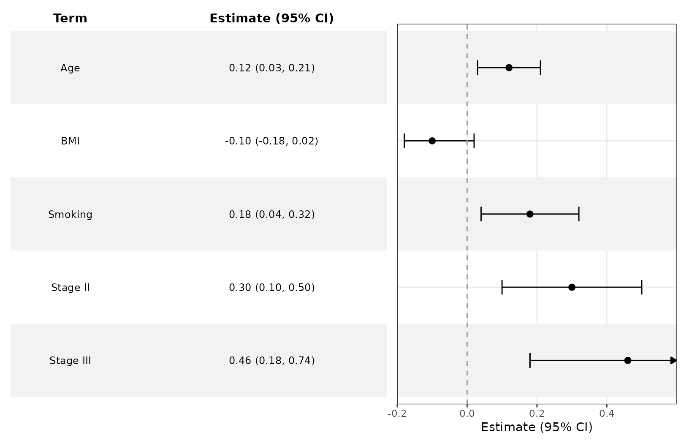
Panel widths and directional labels
Set relative panel widths to reserve room for labels and numeric
columns. Side tables use table_width and
plot_width; split tables use left_width,
plot_width, and right_width.
publication_plot <- ggforestplot(
coefs, p.value = "p_value", striped_rows = TRUE
) +
theme(axis.title.y = element_blank()) +
add_split_table(
left_columns = "term",
right_columns = c("estimate", "p"),
left_width = 1,
plot_width = 4,
right_width = 2
) +
add_favors(left = "Lower outcome", right = "Higher outcome")
publication_plot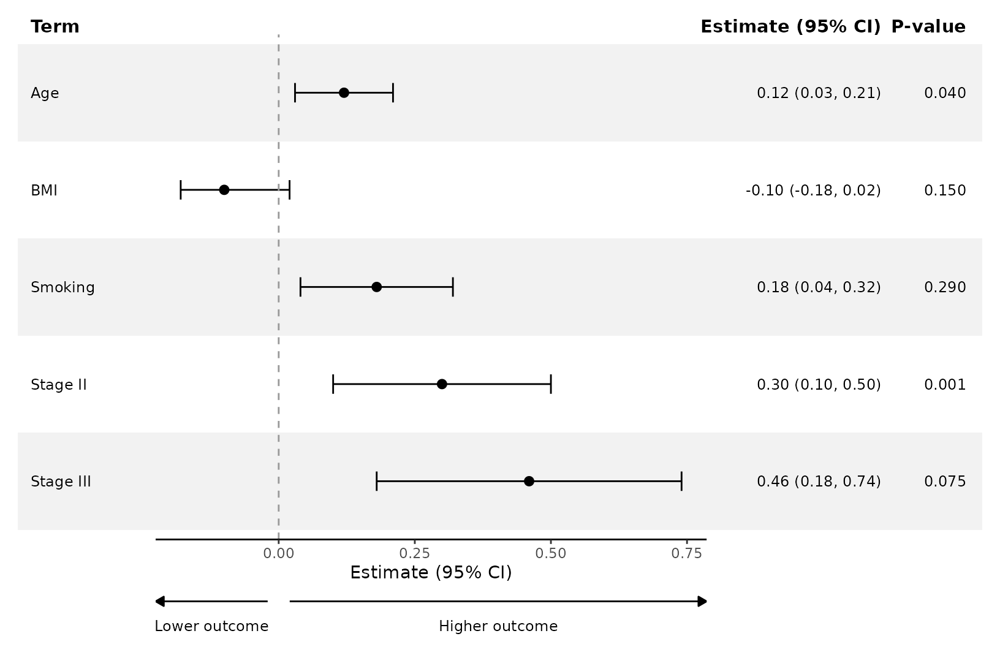
The footer uses the plot’s reference value. Choose labels appropriate to the outcome and contrast; lower values do not always mean benefit.